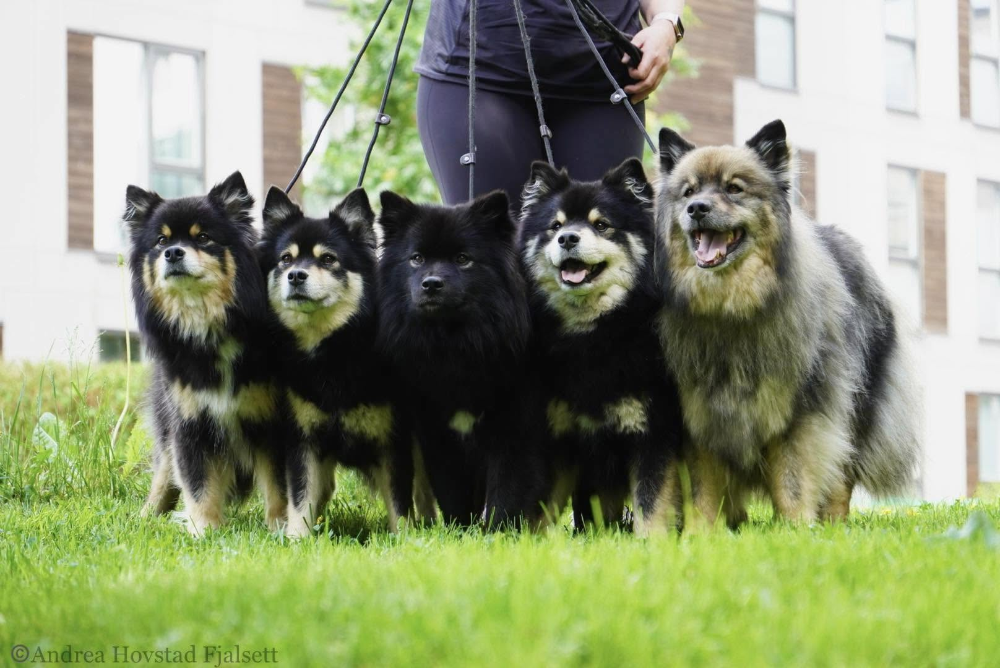
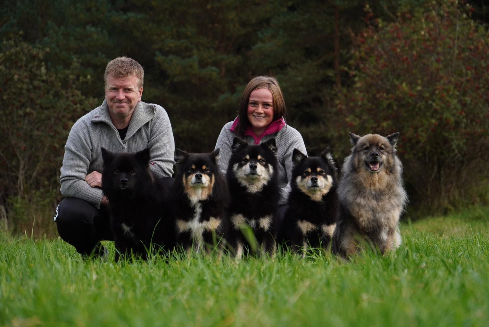
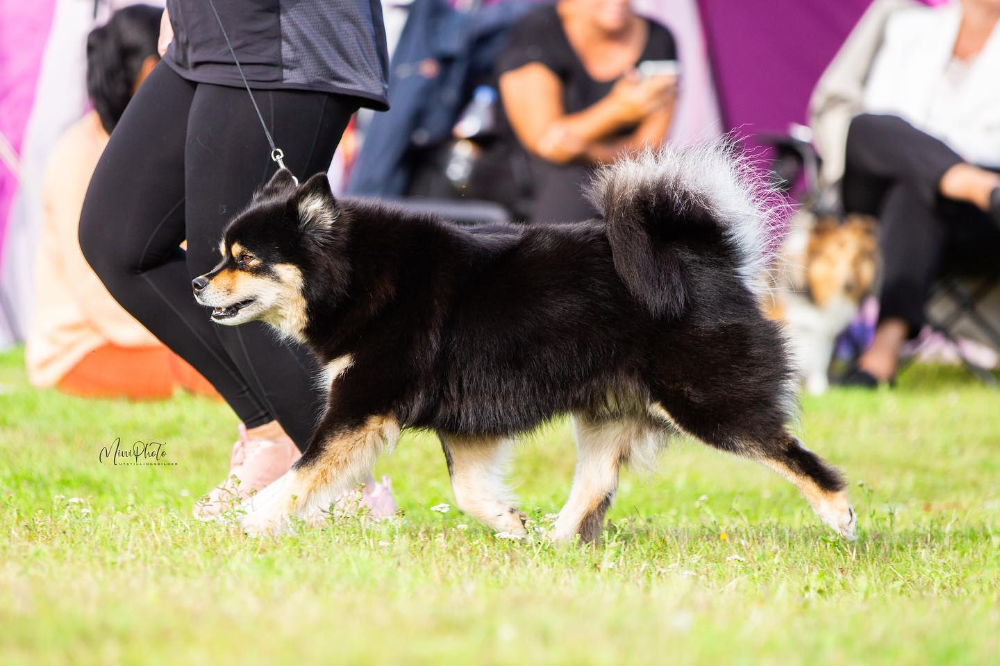

En liten kennel på Fitjar

Tekst her: Presenter deg selv og familien. Hvor lenge har dere drevet med hund? Hva fikk dere til å starte med oppdrett av finsk lapphund? Hvor holder dere til?

Tekst her: Hva er viktigst for dere i avlsarbeidet? Helse, mentalitet, rasetypiske egenskaper, eksteriør? Hvordan balanserer dere disse?
Tekst her: Hvordan velger dere avlsdyr og kombinasjoner? Hva forventer dere av valpekjøpere?
Tekst her: Kort introduksjon til rasen for besøkende som ikke kjenner den. Opprinnelse (samenes gjeterhund), karakter (vennlig, intelligent, lærevillig), eksteriør (mellomstor, tykk pels, oppovervridd hale), aktivitetsnivå.
Tekst her: Hvem passer rasen for? Hva trenger den av aktivitet og stimulering? Hva bør valpekjøpere være forberedt på?

Tekst her: Hvilke helseundersøkelser tar dere på avlsdyrene? HD, øyenlysning, eventuelle DNA-tester? Hvilke krav stiller dere før dere bruker en hund i avl?
Tekst her: Hvordan forholder dere dere til arvelige sykdommer i rasen? Hva er deres holdning til linjeavl/innavl?
Tekst her: Andre prinsipper dere lever etter som oppdretter. Åpenhet om helseresultater? Oppfølging av valpekjøpere? Tilbaketakingsgaranti? Samarbeid med andre oppdrettere?
Tekst her: Er dere medlem av Norsk Kennel Klub, Norsk Lappehundklubb eller andre relevante foreninger? Eventuelle utstillingstitler eller oppdretterutmerkelser dere har fått?
Tekst her: Hvordan tar interesserte valpekjøpere kontakt? Foretrukken kanal (Facebook, e-post, telefon)? Hva slags informasjon ønsker dere å få om mulige valpekjøpere?
Følg oss på Facebook for siste nytt og daglige bilder av hundene våre.